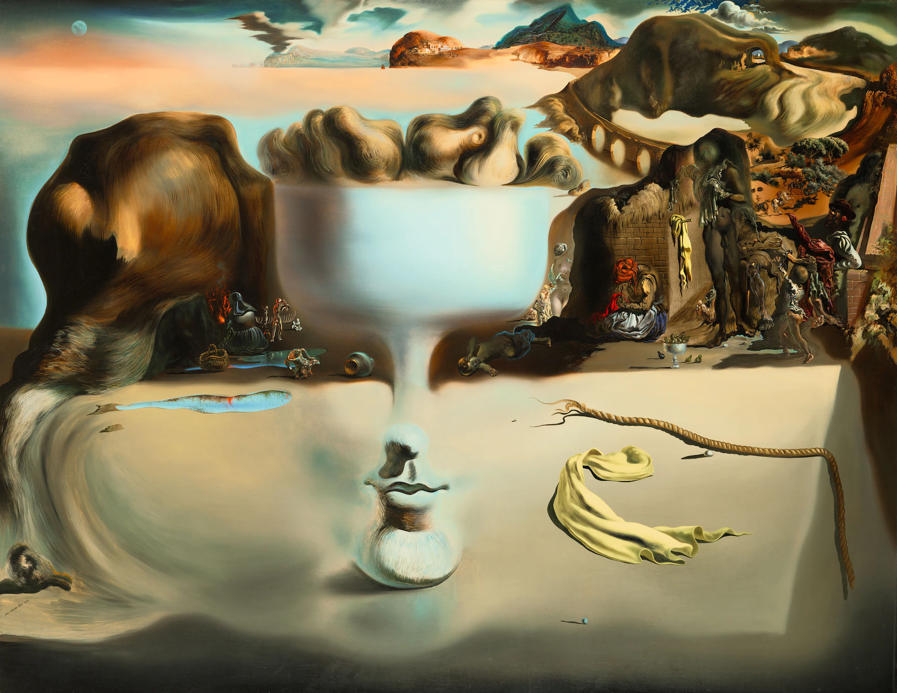
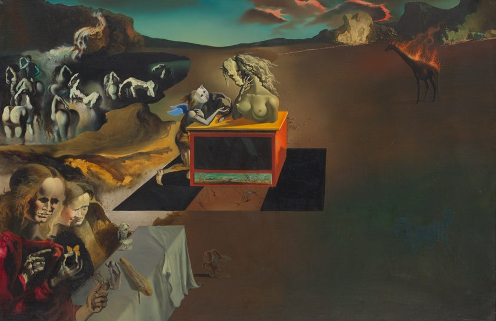
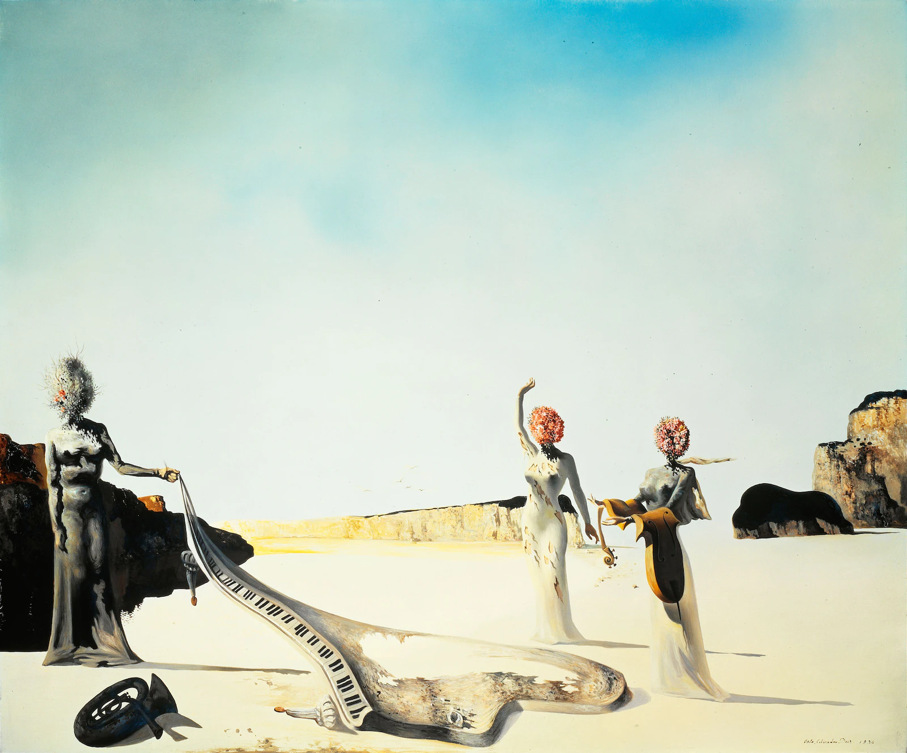
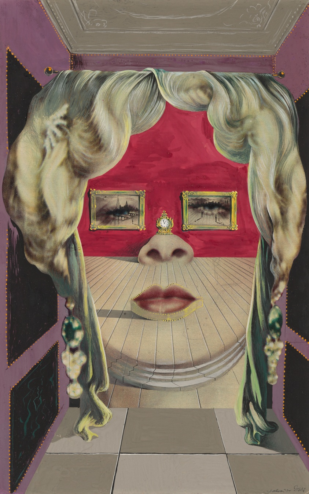
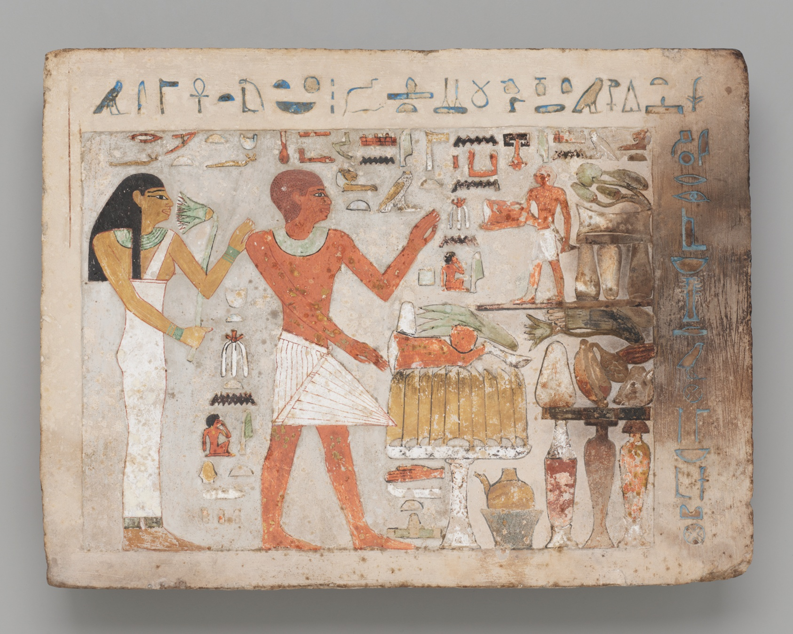
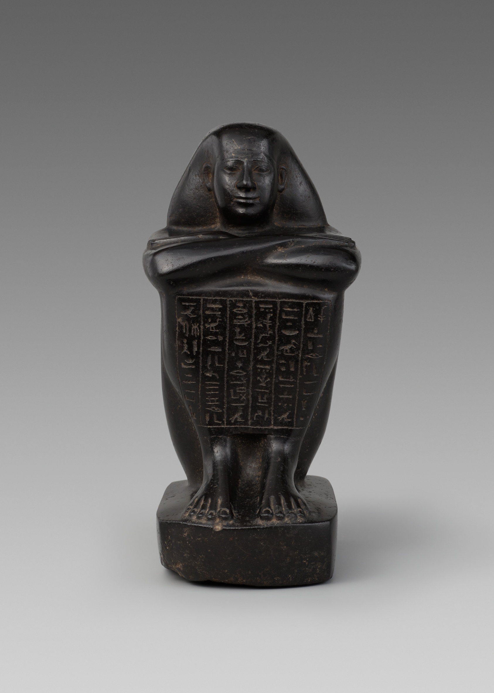
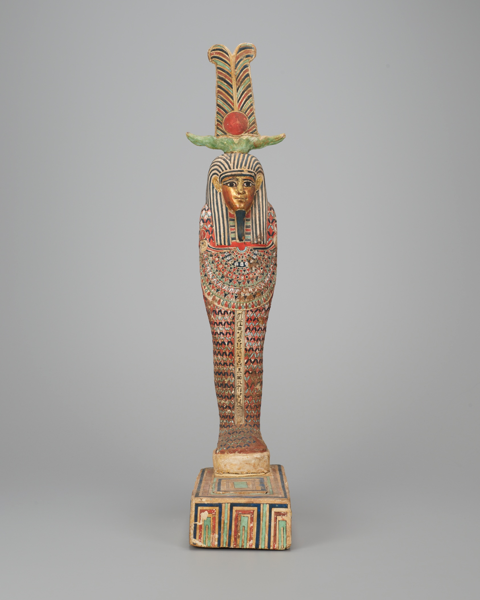
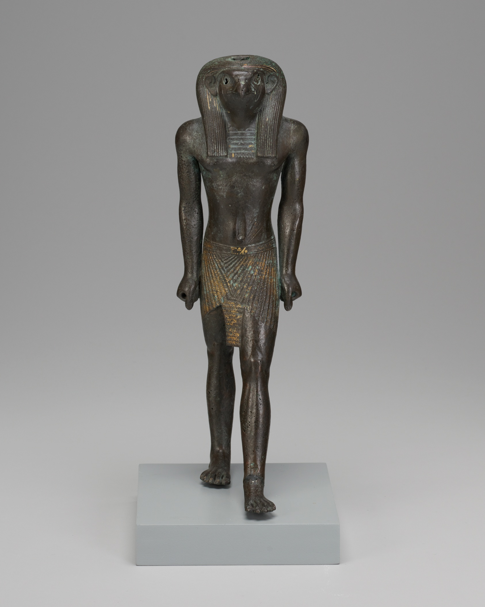

Art from The Art Institute of Chicago
Exhibition:
Kwame Brathwaite: Things Well Worth Waiting For
Untitled (Self-Portrait Taken in AJAS Studio) born 1938 © 1964.
Kwame Brathwaite Self Portrait
The Kwame Brathwaite Archive and Philip Martin Gallery. © The Kwame Brathwaite Archive.
Kwame Brathwaite Self Portrait
The Kwame Brathwaite Archive and Philip Martin Gallery. © The Kwame Brathwaite Archive.
Untitled (Hands in the Shape of a Unity Symbol), about 1971, printed 2021.
The Kwame Brathwaite Archive and Philip Martin Gallery. © The Kwame Brathwaite Archive.
The Kwame Brathwaite Archive and Philip Martin Gallery. © The Kwame Brathwaite Archive.
Kwame Brathwaite Changing Times, about 1973, printed 2021.
The Kwame Brathwaite Archive and Philip Martin Gallery. © The Kwame Brathwaite Archive.
The Kwame Brathwaite Archive and Philip Martin Gallery. © The Kwame Brathwaite Archive.
Untitled (Stevie Wonder Headlines Human Kindness Day at the National Mall, Washington, DC), 1975.
The Kwame Brathwaite Archive and Philip Martin Gallery. © The Kwame Brathwaite Archive.
The Kwame Brathwaite Archive and Philip Martin Gallery. © The Kwame Brathwaite Archive.
Exhibition:
Salvador Dalí: The Image Disappears

Apparition of Face and Fruit Dish on a Beach, © 1938. Salvador Dalí. Wadsworth Atheneum Museum of Art, Hartford, Connecticut. © Salvador Dalí, Fundació Gala-Salvador Dalí / Artists Rights Society (ARS), New York, 2022

A Chemist Lifting with Extreme Precaution the Cuticle of a Grand Piano
© Salvador Dalí, Fundació Gala-Salvador Dalí / Artists Rights Society (ARS), New York, 2018
© Salvador Dalí, Fundació Gala-Salvador Dalí / Artists Rights Society (ARS), New York, 2018

Inventions of the Monsters
© 1937 © Salvador Dalí, Fundació Gala-Salvador Dalí / Artists Rights Society (ARS), New York, 2018
© 1937 © Salvador Dalí, Fundació Gala-Salvador Dalí / Artists Rights Society (ARS), New York, 2018

Three Young Surrealist Women Holding in Their Arms the Skins of an Orchestra, 1936 Salvador Dalí.
The Dalí Museum, St. Petersburg, Florida. © Salvador Dalí, Fundació Gala-Salvador Dalí, Figueres, 2007 USA: © Salvador Dalí Museum Inc., St. Petersburg, FL, 2007
The Dalí Museum, St. Petersburg, Florida. © Salvador Dalí, Fundació Gala-Salvador Dalí, Figueres, 2007 USA: © Salvador Dalí Museum Inc., St. Petersburg, FL, 2007

Mae West’s Face which May be Used as a Surrealist Apartment
Mae West’s Face
© Salvador Dalí, Fundació Gala-Salvador Dalí / Artists Rights Society (ARS), New York, 2018
Mae West’s Face
© Salvador Dalí, Fundació Gala-Salvador Dalí / Artists Rights Society (ARS), New York, 2018
Exhibition:
Live and Afterlife in Ancient Egypt

Stela of Amenemhat and Hemet
CC0 Public Domain Designation Middle Kingdom, early Dynasty 12, about 1956–1877 BCE
CC0 Public Domain Designation Middle Kingdom, early Dynasty 12, about 1956–1877 BCE

Statue of Shebenhor
CC0 Public Domain Designation Late Period, Dynasty 26 (664-525 BCE)
CC0 Public Domain Designation Late Period, Dynasty 26 (664-525 BCE)

Statue of Ptah-Sokar-Osiris
CC0 Public Domain Designation Ptolemaic Period (332–30 BCE)
CC0 Public Domain Designation Ptolemaic Period (332–30 BCE)

Statuette of Re-Horakhty
CC0 Public Domain Designation Third Intermediate Period-Late Period, Dynasty 21–26, about 1069–525 BCE
CC0 Public Domain Designation Third Intermediate Period-Late Period, Dynasty 21–26, about 1069–525 BCE